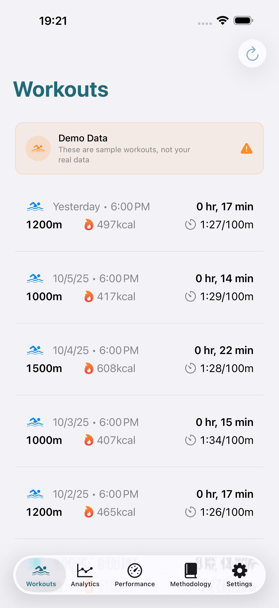
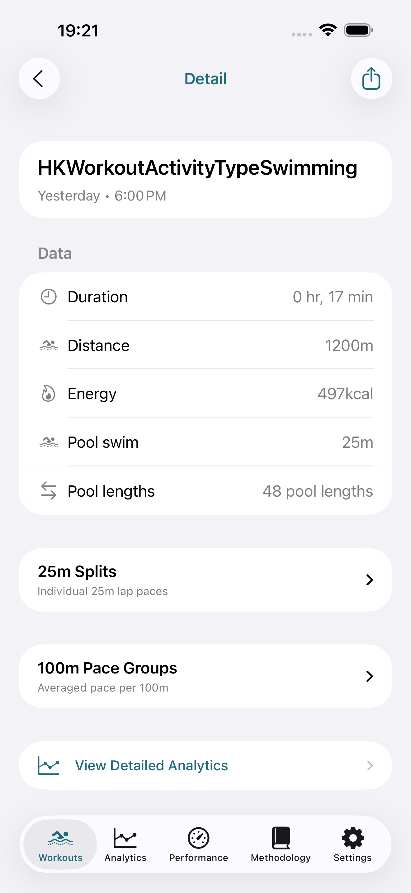
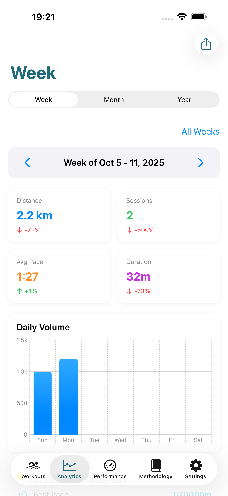
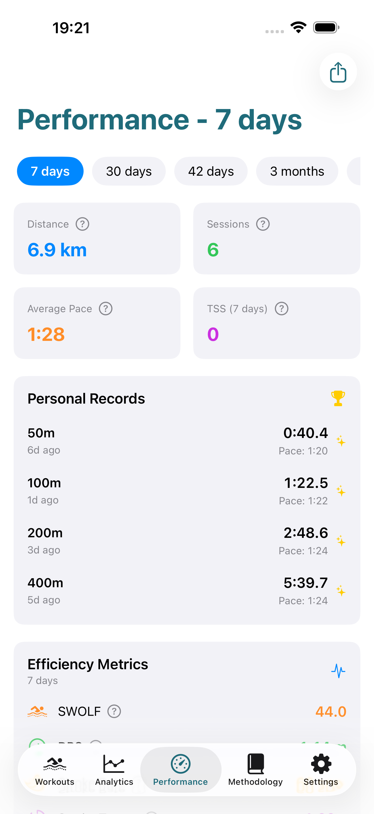
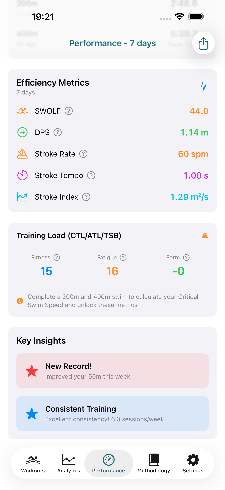
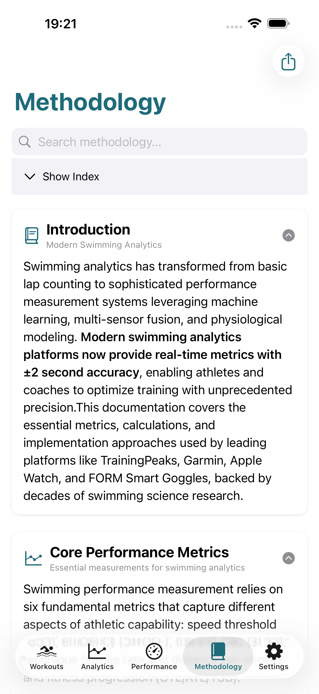

Transformez vos données de natation en performance
Métriques scientifiques, zones d'entraînement personnalisées et suivi complet des performances. Tout traité localement sur votre iPhone en toute confidentialité.
✓ Essai gratuit de 7 jours ✓ Aucun compte requis ✓ Données 100% locales

Tout ce dont vous avez besoin pour progresser
Analyses de niveau professionnel conçues pour les nageurs de tous niveaux
Métriques scientifiques
La Critical Swim Speed (CSS) détermine votre seuil aérobie, permettant le calcul du Training Stress Score (TSS) et le suivi des performances CTL/ATL/TSB basé sur la recherche scientifique éprouvée. Apprenez-en davantage sur notreformules mathématiquesetmesures d'efficacité de la natation.
Zones d'entraînement
7 zones d'entraînement personnalisées calibrées sur votre CSS. Optimisez chaque séance pour la récupération, l'aérobie, le seuil ou le développement du VO₂max.
Comparaisons intelligentes
Comparaisons de périodes hebdomadaires, mensuelles et annuelles avec détection automatique des tendances et pourcentages de changement pour toutes les métriques.
Confidentialité totale
Toutes les données traitées localement sur votre appareil. Pas de serveurs, pas de cloud, pas de suivi. Vous possédez et contrôlez vos données de natation.
Export partout
Exportez les séances et analyses en formats JSON, CSV, HTML ou PDF. Compatible avec les entraîneurs, tableurs et plateformes d'entraînement.
Performances instantanées
Lancement de l'application en moins de 0,35s avec architecture local-first. Consultez vos séances instantanément sans attendre de synchronisations ou téléchargements.
Découvrez Swim Analytics en action
Interface belle et intuitive conçue pour les nageurs

Vue d'ensemble des séances

Analyse longueur par longueur

Métriques avancées

Tendances de performance

Zones d'entraînement

Options d'export
Métriques professionnelles qui comptent
Swim Analytics transforme les données brutes de natation en intelligence exploitable en utilisant des métriques validées par la recherche scientifique en science du sport
CSS
Critical Swim Speed - votre allure au seuil aérobie
TSS
Training Stress Score quantifie l'intensité de la séance
CTL
Chronic Training Load - moyenne mobile sur 42 jours
ATL
Acute Training Load - moyenne mobile sur 7 jours
TSB
Training Stress Balance indique la fraîcheur
SWOLF
Score d'efficacité des coups de bras - plus bas = mieux
7 zones
Niveaux d'intensité de récupération à sprint
RP
Suivi automatique des records personnels
Tarification simple et transparente
Commencez avec un essai gratuit de 7 jours. Annulez à tout moment.
Mensuel
Essai gratuit de 7 jours
- Synchronisation illimitée des séances
- Toutes les métriques scientifiques (CSS, TSS, CTL/ATL/TSB)
- 7 zones d'entraînement personnalisées
- Comparaisons hebdomadaires, mensuelles et annuelles
- Export en JSON, CSV, HTML et PDF
- 100% confidentialité, données locales
- Toutes les mises à jour futures
Annuel
Économisez 8,88€/an (18% de réduction)
- Synchronisation illimitée des séances
- Toutes les métriques scientifiques (CSS, TSS, CTL/ATL/TSB)
- 7 zones d'entraînement personnalisées
- Comparaisons hebdomadaires, mensuelles et annuelles
- Export en JSON, CSV, HTML et PDF
- 100% confidentialité, données locales
- Toutes les mises à jour futures
- Seulement 3,25€/mois
Conçu pour les nageurs sérieux
Fonctionnalités professionnelles sans la complexité
Protocole de test CSS
Protocole intégré 400m + 200m pour déterminer votre Critical Swim Speed. Répétez tous les 6-8 semaines pour suivre la progression et ajuster automatiquement les zones d'entraînement.
Expérience iOS native
Conçu avec SwiftUI pour des performances fluides et une intégration iOS. Synchronisation transparente avec l'app Santé, support des widgets et langage de design Apple familier.
Basé sur la recherche
Toutes les métriques basées sur la recherche scientifique en science du sport évaluée par les pairs. CSS de Wakayoshi et al., TSS adapté pour la natation avec formule IF³, modèles CTL/ATL éprouvés.
Compatible entraîneurs
Exportez des rapports détaillés pour les entraîneurs. Partagez des résumés HTML par e-mail, CSV pour l'analyse en tableur, ou PDF pour les journaux d'entraînement et archives.
Fonctionne partout
Piscine ou eau libre, sprints ou distance. Swim Analytics s'adapte à tous les types de natation et détecte automatiquement les caractéristiques des séances.
Toujours en amélioration
Mises à jour régulières avec nouvelles fonctionnalités basées sur les retours utilisateurs. Ajouts récents incluent comparaisons annuelles, suivi des records personnels et options d'export améliorées.
Questions fréquemment posées
Comment Swim Analytics obtient-il mes données de natation ?
Swim Analytics se synchronise avec Apple Santé pour importer les séances de natation enregistrées par n'importe quel appareil ou application compatible. Cela inclut les montres connectées, trackers d'activité et saisies manuelles. L'application traite ces données localement pour calculer des métriques avancées.
Qu'est-ce que le test CSS et comment le réaliser ?
Le CSS (Critical Swim Speed) est un protocole scientifique utilisant 2 nages maximales : 400m et 200m avec 10-20 minutes de repos entre les deux. L'application calcule votre seuil aérobie à partir de ces temps et ajuste automatiquement toutes les zones d'entraînement. Répétez tous les 6-8 semaines pour suivre la progression.
Mes données sont-elles téléchargées dans le cloud ?
Non. Swim Analytics traite toutes les données localement sur votre iPhone. Il n'y a pas de serveurs externes, pas de comptes cloud, pas de transferts de données. Vous contrôlez les exports : générez des fichiers JSON, CSV, HTML ou PDF et partagez-les comme vous le souhaitez.
Puis-je utiliser Swim Analytics pour la nage en eau libre ?
Oui. Swim Analytics fonctionne avec toute séance de natation dans Apple Santé, y compris l'eau libre. L'application s'adapte aux métriques disponibles que vous soyez en piscine ou en eau libre, fournissant une analyse pertinente pour chaque environnement.
Quelle est la différence entre les forfaits mensuel et annuel ?
Les deux forfaits offrent des fonctionnalités identiques : toutes les métriques, zones illimitées, comparaisons temporelles, exports multiples et mises à jour gratuites. La seule différence est le prix : l'annuel fait économiser 18% (équivalent à 3,25€/mois vs 3,99€/mois).
Puis-je annuler mon abonnement à tout moment ?
Oui. Les abonnements sont gérés via l'App Store, vous pouvez donc annuler à tout moment depuis Réglages → [Votre nom] → Abonnements. Si vous annulez, vous conserverez l'accès jusqu'à la fin de votre période de facturation en cours.
Prêt à transformer votre natation ?
Rejoignez des milliers de nageurs utilisant des métriques scientifiques pour améliorer leurs performances. Commencez votre essai gratuit de 7 jours aujourd'hui.
En savoir plus sur l'analyse de natation
Plongez plus profondément dans la science derrière Swim Analytics
Critical Swim Speed
Comprenez comment le CSS détermine votre seuil aérobie et pourquoi c'est crucial pour un entraînement structuré.
En savoir plus sur le CSS →Gestion de la charge d'entraînement
Découvrez comment le TSS, CTL, ATL et TSB vous aident à équilibrer le stress d'entraînement et la récupération.
Explorer la charge d'entraînement →Zones d'entraînement
Découvrez les 7 zones d'entraînement et comment les utiliser pour planifier des séances ciblées.
Voir les zones d'entraînement →Swim Analytics: App de Suivi et Analyse de Performance en Natation
Suivez les mesures de natation, calculez CSS et sTSS, analysez la charge d'entraînement avec des analyses professionnelles. Calculatrices gratuites pour les nageurs...
- 2026-03-04
- app natation · analytics natation · calculatrice CSS · performance natation · sTSS
- Bibliographie